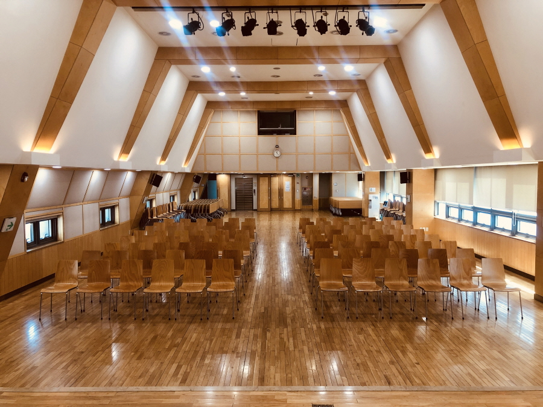
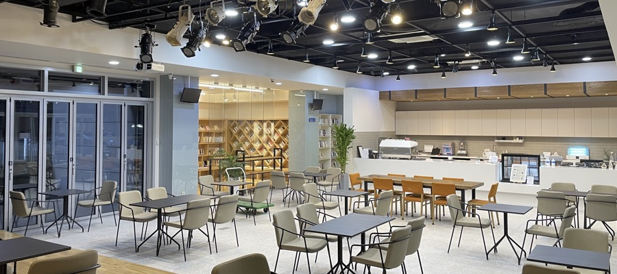
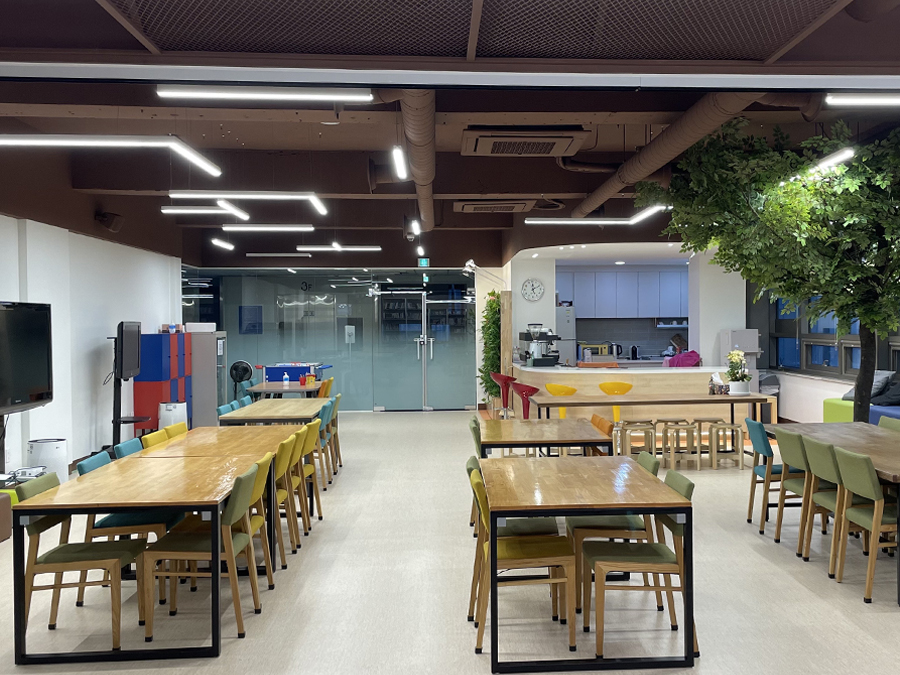
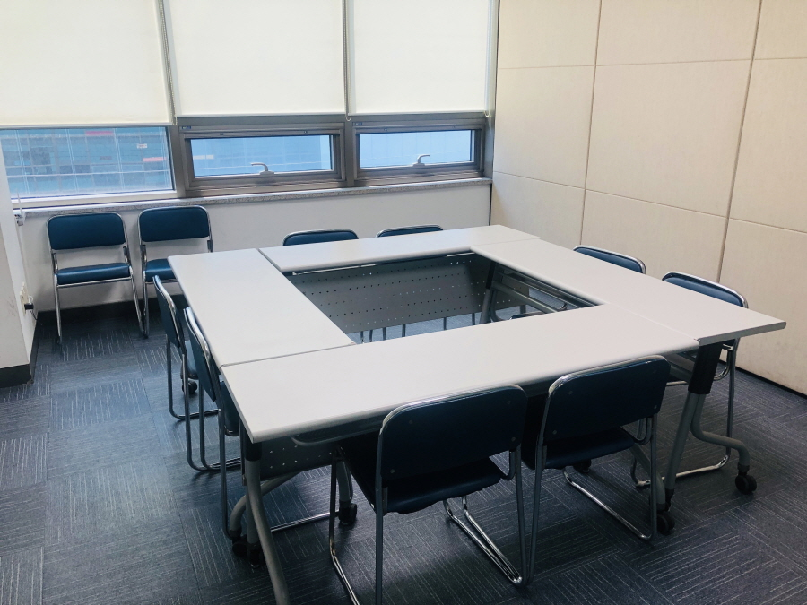
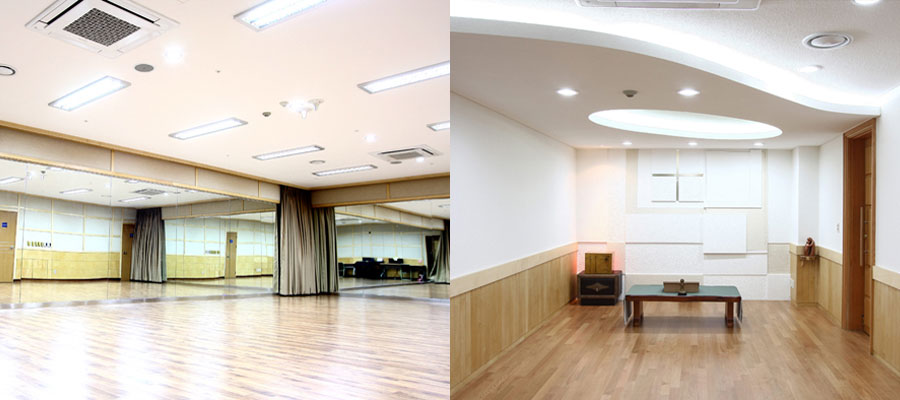

- 다리소극장
- 니콜라오 홀
- 카페
- 청소년문화공간JU
- 모임방
- 기타시설

①
연극/무용/콘서트 등의 공연 전문 공간이며 최대 관람객 200명 수용이 가능합니다.
②
공연장 내부에 출연자 대기실(분장실)과 음향/영상(오퍼실)이 마련되어 있습니다.
③
로비에서 티켓팅 후 관객 대기 장소 및 포토존으로 활용할 수 있습니다.
④
외부에서 소극장으로 바로 연결되는 단독 출입구가 있어 안내가 편리합니다.
┌ 무대 사이즈 : 가로9m * 깊이8m * 높이4m / 스크린 사이즈 : 가로6m * 세로4m / 현수막 사이즈 : 가로8.4m * 세로60cm
├ 포토존트러스 : 가로2m30cm * 세로2m65cm
└ 기본 부대 설비 : 빔프로젝트, 무선마이크(4대), 음향 및 조명 시설, 유·무선인터넷(유선 인터넷 선 별도 지참)
★ 카페와 중복 대관 불가능합니다.
★ 미리 연락 후 공간 답사 가능합니다. (공간 및 답사 문의 02-338-7831)

①
세미나/강연/워크숍 등의 공간이며 최대 200명 수용 가능합니다.
②
따뜻한 느낌의 목재 인테리어와 높게 트인 천정으로 전체적으로 온화한 분위기를 보여줍니다.
③
1층부터 엘리베이터가 직접 연결되어 출입이 용이합니다.
④
강당 내부에 대기실 없습니다. 6층에 음향/영상(오퍼실)이 마련되어 있습니다.
⑤
이동식 책상과 의자가 준비되어 있어 행사 특성에 맞게 사용 가능 합니다.
⑥
화장실이 강당 내부에 위치하여 이용이 편리합니다.
┏ 무대 사이즈 : 가로10m * 세로4m / 무대 외 사이즈 : 가로 10m * 세로 28m
┣ 스크린 사이즈 : 가로6m * 세로3m
┣ 현수막 사이즈 : 가로5.6m * 세로60cm / 현수막 전면 : 가로6m * 세로 4m60cm
┗ 기본 부대 설비 : 조명 및 음향 시설, 빔프로젝트, 유선(1대)·무선 마이크(4대), 유·무선 인터넷(유선 인터넷 선 별도 지참)
★ 악기 연주 및 공연 형식의 대관 불가
★ 미리 연락 후 공간 답사 가능합니다. (공간 및 답사 문의 02-338-7830)

①
소규모 콘서트/강연/워크숍 등의 공연 공간이며 최대 50명 수용 가능합니다.
②
커피와 함께 무대, 작은 갤러리 공간이 어우러진 공간입니다.
③
음료 이용시 카페 직원을 통해 음료를 제공 받을 수 있습니다. (음료 비용 별도)
┏ 무대 사이즈 : 가로7m * 세로3m70cm / 실사이즈 : 가로9m60cm * 세로3m70cm
┣ 스크린 사이즈 : 가로3.2m * 세로2.4m
┣ 현수막 사이즈 : 가로6m * 세로60cm / 스크린 사용시 : 가로4.9m * 세로60cm
┗ 기본 부대 설비 : 조명 및 음향 시설, 빔프로젝트, 무선 마이크(4대), 무선 인터넷
★ 다리소극장과 중복 대관 불가능합니다.
※카페 음료 이용 안내 사항※
┏ 카페 운영 시간 평일·주말 11시~20시까지 카페 음료 주문이 가능합니다.(Last Order 19시 30분)
┣ 18시 이후 대관시 카페 이용에 대한 부분은 따로 문의 바랍니다.
┗ 카페 메뉴 요청해 주시면 대관 신청한 메일로 보내드리겠습니다.
★ 미리 연락 후 공간 답사 가능합니다. (공간 및 답사 문의 02-338-7830)

◇청소년문화공간JU(전체)◇
①
소규모 세미나/강연/워크숍 등의 공간이며 최대 50명 수용 가능합니다.
②
청소년들이 함께 사용하는 공간입니다.
③
사진상 보이는 주방안의 모든 시설과 집기류는 사용이 불가능하며 주방 출입을 금합니다.
┏ 현수막 사이즈 : 가로4m * 세로80cm
┗ 기본 부대설비 : 75인치 ㆍ 50인치 이동식TVㆍ 이동식 빔프로젝트, 음향장비, 무선마이크, 무선인터넷
◇청소년문화공간JU(모임방)◇
①
소규모 회의 및 모임, 스터디의 장소로 사용 하실 수 있습니다.
┏ 기본 부대설비 : 42인치 고정식TV, 무선인터넷
┗ 음향 사용이 불가능한 공간입니다. (전체공간 대관시 가능)
★ 악기 연주 및 공연 형식의 대관 불가
★ 미리 연락 후 공간 답사 가능합니다. (공간 및 답사 문의 02-338-7830)

◇모임방3, 4, 7, 8, 9, 10◇
①
소규모의 회의, 모임, 토론, 스터디 공간으로 사용이 가능합니다.
②
필요 시 모임방 2개를 연결하여 병합 활용이 가능합니다.(3+4, 7+8, 9+10)
* 모임방 3, 4, 7, 8, 9, 10 : 8~10명
* 모임방 3+4, 7+8, 9+10 : 16~20명
┏ 기본 부대설비 : 컬러유리보드, 무선인터넷
┣ 이동식 빔프로젝트, 이동식 TV(43인치) 추가 신청시 사용 가능(사용료 별도)
┗ 모임방 안 현수막 부착 불가능, 각 모임방 문 옆 A4 사이즈 포스터 한장 자석으로 부착 가능
◇모임방5, 6◇
①
소규모의 회의, 모임, 토론, 스터디 공간으로 사용이 가능합니다.
* 모임방5 : 16~20명
* 모임방6 : 30명
┏ 기본 부대설비 : 컬러유리보드, 고정식 빔프로젝트, 무선인터넷
┗ 모임방 안 현수막 부착 불가능, 각 모임방 문 옆 A4 사이즈 포스터 한장 자석으로 부착 가능
★ 모임방 전체 공간 악기 연주 및 공연 형식의 대관 불가
★ 미리 연락 후 공간 답사 가능합니다. (공간 및 답사 문의 02-338-7830)

연습실 (B1층)
①
연극, 무용, 노래 연습이 가능한 공간이며 10~12명 사용에 가능합니다.
②
연습실 안의 기타, 베이스, 엠프는 청소년들 문화수업에 사용되는 악기로 사용이 불가능 합니다.
- 기본 부대설비 : 전면거울, 피아노, 스피커, 무선인터넷
★ 연극, 무용 및 노래 연습을 제외한 대관은 불가
★ 12인 초과 사용 및 장기 대관 불가
경당(3F)
①
십자가의 길과 묵상을 할 수 있는 공간입니다.
★ 대관이 불가능한 장소 입니다.